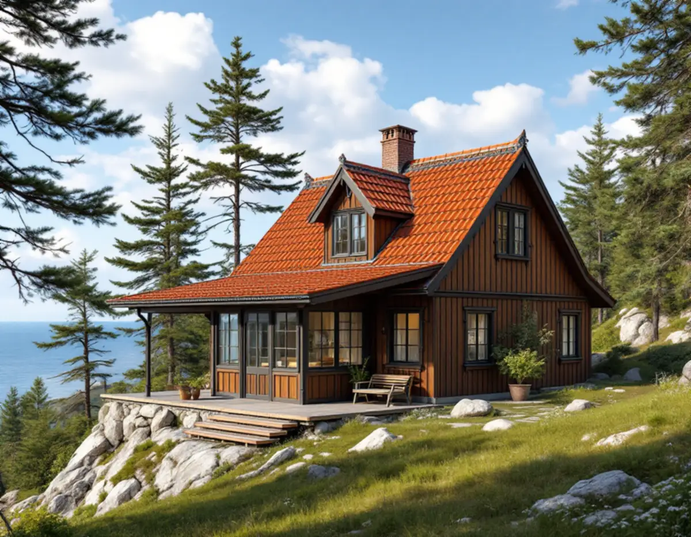
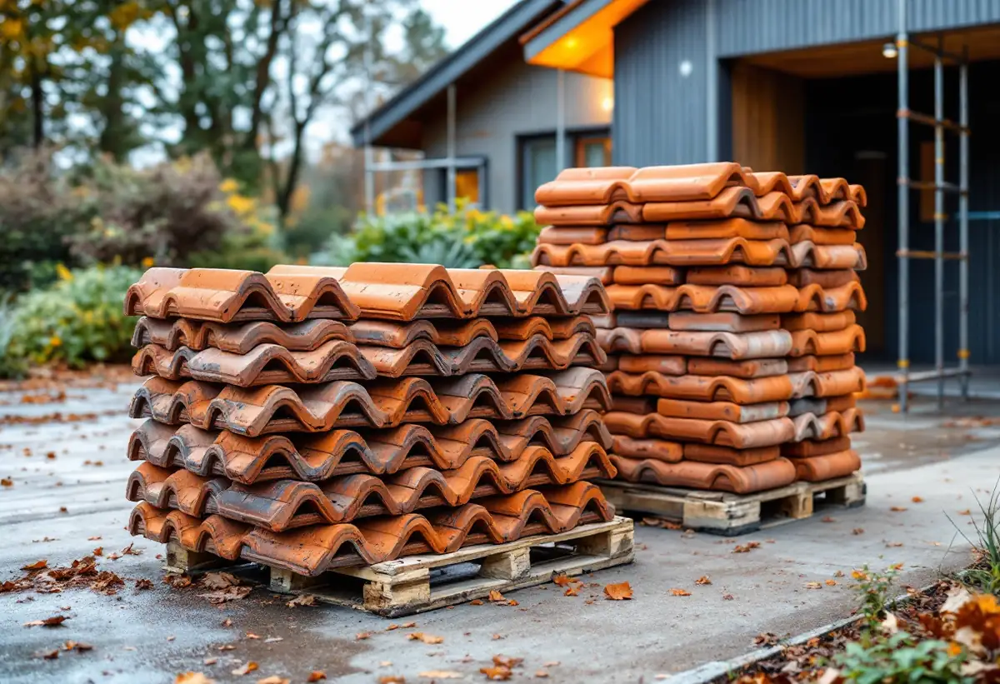
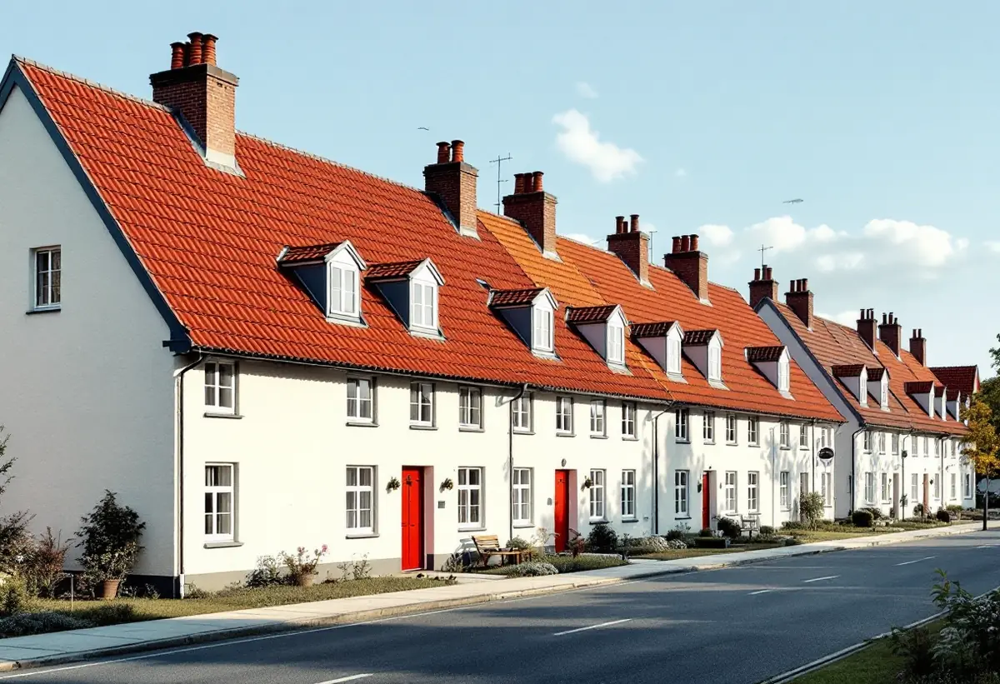

Husets status
Byggnadsminne, skyddsbestämmelser och kulturmiljöprogrammet kontrolleras.
Samma pannor igen eller ett annat material – på Lidingö är det frågan som avgör om ett takbyte kan bli en lovfråga. Svaret hänger på om huset eller området är särskilt värdefullt, och det är inte självklart. Geal Entreprenad AB byter tak i hela Lidingö och tar reda på husets status innan materialet väljs.

Lidingö stad beskriver en fasadändring som en ändring av det yttre utseendet, till exempel att måla om, byta fasadmaterial, byta takmaterial eller ändra fönster och dörrar. Inom detaljplan krävs bygglov för fasadändring på andra byggnader än en- och tvåbostadshus, komplementbyggnader och komplementbostadshus, när ändringen sker på en fasad eller ett tak mot allmän plats och påverkar husets karaktär. För en villa är huvudregeln alltså att det inte krävs lov.
Men staden skriver också att du behöver bygglov för en fasadändring om din fastighet ligger inom ett kulturhistoriskt värdefullt område eller om byggnaden är kulturhistoriskt värdefull. Byter du lertegel mot betongpannor eller plåt på ett sådant hus är det en lovfråga. För en lovfri fasadändring kan du söka frivilligt bygglov och få miljö- och stadsbyggnadsnämndens beslut på att det du planerar uppfyller lagens krav.

Staden påpekar att k-märkt inte är ett juridiskt begrepp. Oftast menas något av följande: att byggnaden är skyddad som byggnadsminne, att den har skyddsbestämmelser i en detaljplan eller områdesbestämmelse, att den är utpekad som värdefull i kulturmiljöprogrammet eller att den ligger i en kulturmiljö som programmet pekar ut. I dagens detaljplaner används huvudsakligen q för skydd av kulturvärden, k för karaktärsdrag och r för rivningsförbud, men äldre planer kan ha andra beteckningar.
Lidingö har nio byggnadsminnen, bland dem Villa Skogsbacken, Täcka Udden, Villa Högberga, Villa Klippudden och radhusen på Canadastigen. För dem är det Länsstyrelsen som beslutar om tillstånd till ändringar och har tillsynen. Ett takbyte på ett byggnadsminne börjar därför med en kontakt med Länsstyrelsen.
Vad som gör en byggnad särskilt värdefull beskriver staden med hjälp av de allmänna råden i Boverkets byggregler. Ett av exemplen gäller tak direkt: en byggnad kan vara särskilt värdefull om den i sig är en källa till kunskap om äldre material och teknik. Ett gammalt lertegeltak, en falsad plåt eller ett skiffertak kan alltså vara en del av husets värde, inte bara ett ytskikt.
Staden skriver också att kulturmiljöprogrammet pekar ut områden snarare än enskilda hus, och att det därför finns särskilt värdefulla byggnader som inte beskrivs i programmet. Inom de utpekade områdena bör alla fastigheter hanteras varsamt, eftersom åtgärder på ett hus kan påverka helheten. Vid ett takbyte på ett sådant hus föreslår vi att material och detaljer behålls eller återskapas.
Lidingö stad har äldre byggnadsinventeringar för enskilda byggnader, dels från 1970- och 1980-talen, dels från 2013–2015. Via kundcenter för miljö- och stadsbyggnadskontoret kan du be att få ta del av de beskrivningar som finns för din fastighet. Där kan det framgå vilket material taket hade från början.
Med det underlaget kan vi föreslå ett material som passar huset och, om det behövs, ta fram handlingar till ett bygglov eller frivilligt lov. Om villastäderna och takens epoker på ön kan du läsa under takrenovering på Lidingö, om plåt och rännor under plåtslagare på Lidingö och om våra tjänster i stort under takläggare på Lidingö.

Byggnadsminne, skyddsbestämmelser och kulturmiljöprogrammet kontrolleras.
Tak, underlag, plåt och detaljer som bär husets karaktär.
Samma material eller nytt – och vad det betyder för lovfrågan.
Rivning, underlag, ytskikt, plåt och ställning står var för sig.
Gammalt tak rivs, underlaget ses över och nytt tak läggs.
Vi går igenom det färdiga taket med dig.
Att byta och reparera takpannor och hängrännor på ett småhus är rotarbete enligt Skatteverket, liksom att byta plåttak och stuprör och att montera och montera ner byggnadsställningar i samband med arbetet. Är bostaden yngre än fem år får arbetet bara återställa det ursprungliga skicket, och nytt material ska då vara likvärdigt med det gamla.
Avdraget är högst 30 procent av arbetskostnaden, högst 50 000 kronor per person och år och högst 75 000 kronor tillsammans med rutavdrag. Material och resor ger inget avdrag. Geal drar avdraget direkt på fakturan.
Takets yta och form, materialet, hur mycket underlag som behöver bytas, plåtdetaljer och om material eller detaljer ska återskapas på ett värdefullt hus. Läs mer i vad kostar ett takbyte. Efter ett gratis platsbesök får du ett skriftligt kostnadsförslag.
Byte av tegel-, betong- och plåttak.
Takbyte →Takbyte, takbesiktning och plåtarbeten.
Takläggare på Lidingö →Brevik, Mölna och Käppala.
Takrenovering på Lidingö →Potten, avloppet och kulturmiljöerna.
Attefallshus på Lidingö →Värdefulla hus, kulör och bidrag.
Fasadmålning på Lidingö →Villastäderna och Brevik på Lidingö.
Fönsterbyte på Lidingö →Fönster i utpekade kulturmiljöer.
Fönsterrenovering på Lidingö →Slipa och behandla trägolv i kök och hall.
Golvslipning på Lidingö →Plåt i vind och värdefulla miljöer.
Plåtslagare på Lidingö →Villastad, källarbadrum och gästhus.
Badrumsrenovering på Lidingö →Villastäder, radhusbyar och berg.
Byggföretag på Lidingö →Radhus, villor och putsfasader på Lidingö.
Fasadrenovering på Lidingö →Souterrängvillor, radhus och äldre villor på Lidingö.
Golvläggare på Lidingö →Villastäder, souterräng och radhusbyar.
Köksrenovering på Lidingö →Villastäder, radhusbyar och stugor på Lidingö.
Målare på Lidingö →Verandor, trappor och dörrar.
Snickare på Lidingö →Ny tapet med hänsyn till huset.
Tapetsering på Lidingö →Webbkartan, programmet och frivilligt lov.
Tillbyggnad på Lidingö →Behåll stommen, bygg om resten.
Totalrenovering på Lidingö →